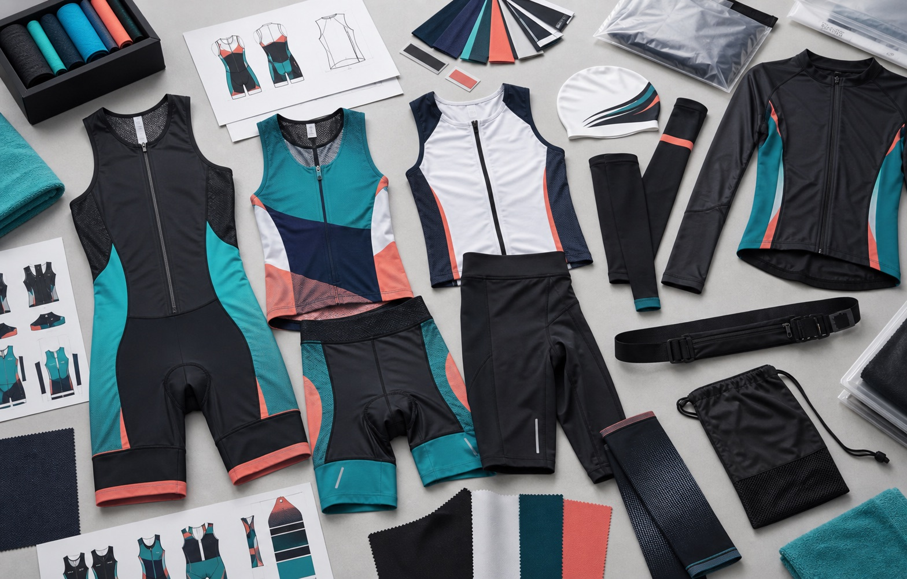

Tri Suits and Race Apparel
- One-piece tri suits, two-piece tri sets, race jerseys, compression shorts, and race-number friendly details
- Aero mesh, quick-dry jersey, smooth compression fabric, flatlock seams, and silicone grippers
- Useful for triathlon clubs, endurance races, cycling teams, and performance ecommerce brands